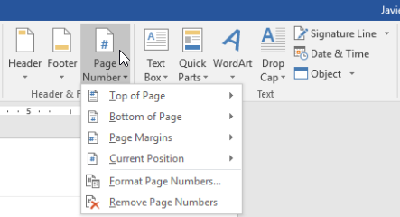
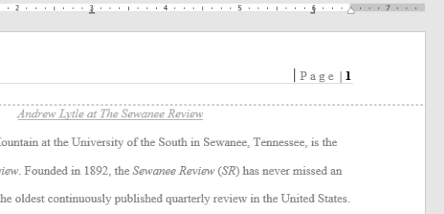
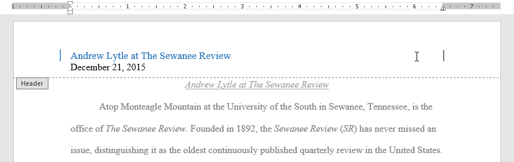
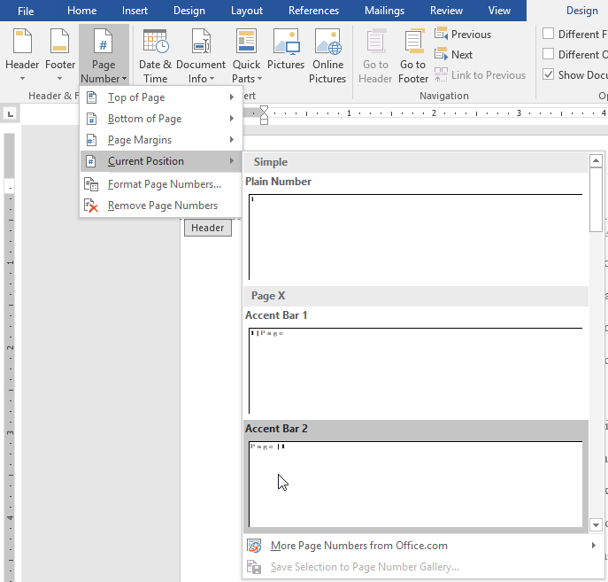
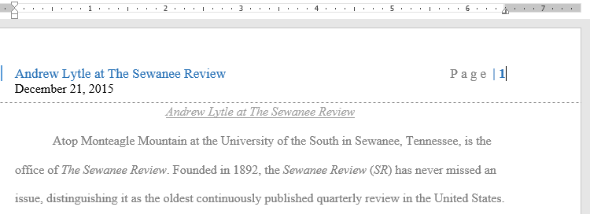
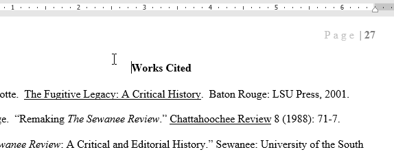
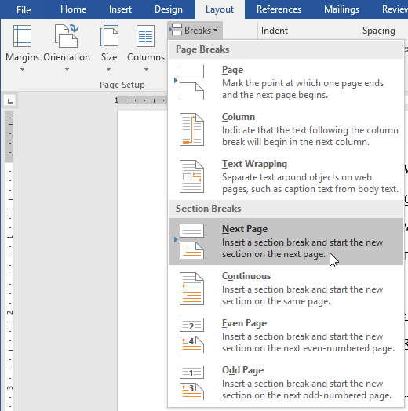
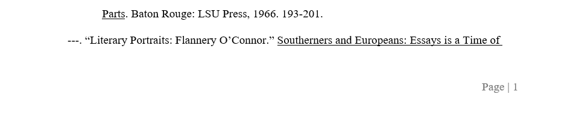

Lesson 17: page-numbers
Lesson 17: Page Numbers
/en/word/headers-and-footers/content/
Introduction
Page numbers can be used to automatically number each page in your document. They come in a wide range of number formats and can be customized to suit your needs. Page numbers are usually placed in the header, footer, or side margin. When you need to number some pages differently, Word allows you to restart page numbering.
Watch the video below to learn more about page numbers in Word.
[](../../../../../www.youtube.com/embed/JDqPR98mIZM.webm)
To add page numbers:
Word can automatically label each page with a page number and place it in a header, footer, or side margin. If you have an existing header or footer, it will be removed and replaced with the page number.
- On the Insert tab, click the Page Number command.

2. Open the Top of Page, Bottom of Page, or Page Margins menu, depending on where you want the page number to be positioned, then select the desired style of header. 3. Page numbering will appear.
3. Page numbering will appear.

4. Press the Esc key to lock the header and footer. 5. If you need to make any changes to your page numbers, simply double-click the header or footer to unlock it.
5. If you need to make any changes to your page numbers, simply double-click the header or footer to unlock it.
If you've created a page number in the side margin, it's still considered part of the header or footer. You won't be able to select the page number unless the header or footer is selected.
To add page numbers to an existing header or footer:
If you already have a header or footer and you want to add a page number to it, Word has an option to automatically insert the page number into the existing header or footer. In our example, we'll add page numbering to our document's header.
- Double-click anywhere on the header or footer to unlock it.

2. On the Design tab, click the Page Number command. In the menu that appears, hover the mouse over Current Position and select the desired page numbering style.
3. Page numbering will appear.
4. When you're finished, press the Esc key.
To hide the page number on the first page:
In some documents, you may not want the first page to show the page number. You can hide the first page number without affecting the rest of the pages.
- Double-click the header or footer to unlock it.
- From the Design tab, place a checkmark next to Different First Page. The header and footer will disappear from the first page. If you want, you can type something new in the header or footer, and it will only affect the first page.

If you're unable to select Different First Page, it may be because an object within the header or footer is selected. Click an empty area within the header or footer to make sure nothing is selected.
To restart page numbering:
Word allows you to restart page numbering on any page of your document. You can do this by inserting a section break and selecting the number you want to restart the numbering with. In our example, we'll restart the page numbering for our document's Works Cited section.
- Place the insertion point at the top of the page you want to restart page numbering for. If there is text on the page, place the insertion point at the beginning of the text.

2. Select the Layout tab, then click the Breaks command. Select Next Page from the drop-down menu that appears.
3. A section break will be added to the document. 4. Double-click the header or footer containing the page number you want to restart. 5. Click the Page Number command. In the menu that appears, select Format Page Numbers.
5. Click the Page Number command. In the menu that appears, select Format Page Numbers.
 6. A dialog box will appear. Click the Start at: button. By default, it will start at 1. If you want, you can change the number. When you're done, click OK.
6. A dialog box will appear. Click the Start at: button. By default, it will start at 1. If you want, you can change the number. When you're done, click OK.
 7. The page numbering will restart.
7. The page numbering will restart.

To learn more about adding section breaks to your document, review our lesson on Breaks.
Challenge!
- Open our practice document.
- On page 1, insert the Accent Bar 4 page number at the Bottom of Page.
- In the Design Options, choose Different First Page. The page number should now be hidden on the first page.
- Scroll to page 27 of the document.
- Place your cursor at the beginning of the title Works Cited and insert a Continuous Section break.
- In the footer of page 27, restart the page numbering at 1.
- When you're finished, the bottom of page 27 should look like this:

/en/word/pictures-and-text-wrapping/content/